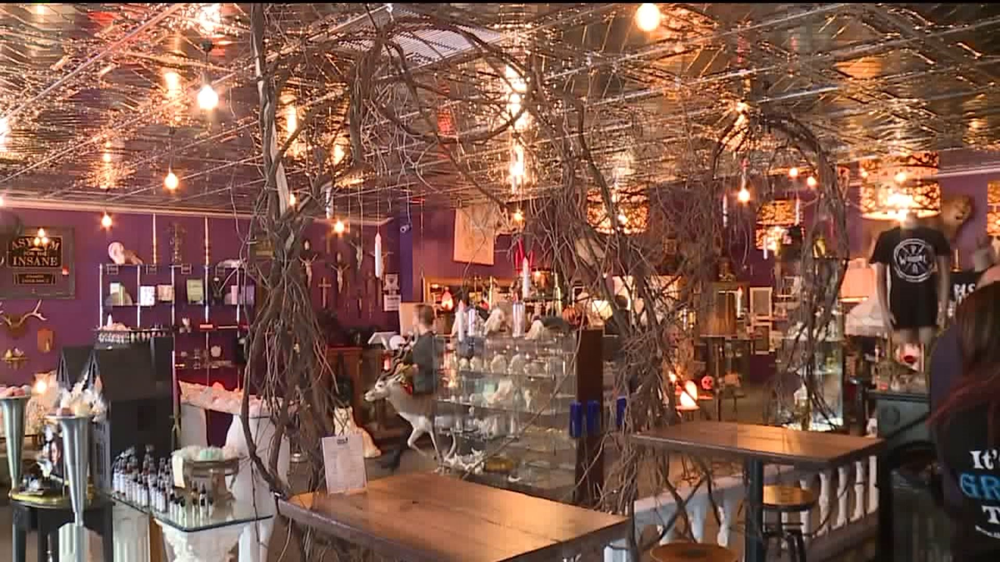
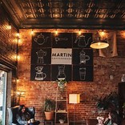
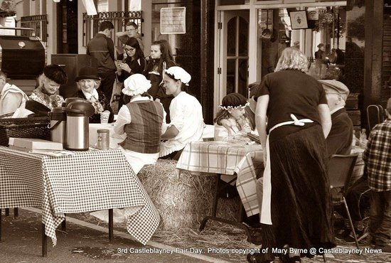
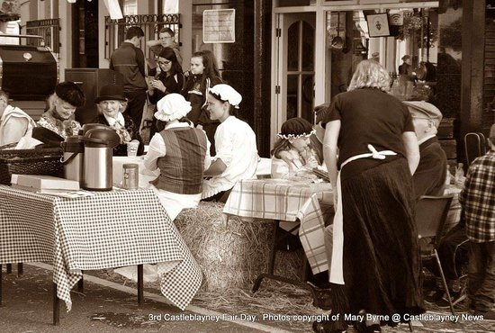

ABOUT
TheBest Coffee shop you won’t want to leave!!
Tuesday, May 13, 2024
by Tinashe Nyamura
The Cozy coffee shop has perennial favourites because of its killer brews and outstanding attention to detail when it comes to the things that count most: flavour and ambience. That, plus all-important free and unrestricted WiFi, make its café inviting all year round and even all day long.

This café and créperie – with its brown-accented interior, wooden tables, black Tolix chairs, armchairs and a comfortable couch – feels like a modern French café. It feels comfortable enough to set up your laptop and work alone or with your team. On a pleasantly sunny winter afternoon, sit outside in the courtyard surrounded by potted plants and soak up the South African winter warmth in the whimsically charming setting.Perfect Cup also serves single-origin coffee from Ethiopia, Kenya, Brazil, Colombia, Guatemala, Indonesia and Costa Rica. Start your morning with a café latté or Belgian hot chocolate with an exquisite sandwich (of seeded rye bread or French baguette) with fillings of delightful and irrisistable snacks. For lunch, opt for a French buckwheat gallette with our famous uniqe coffee drinks.Try the burgers made with 100% hand-pressed beef patties and freshly baked buns.

This cafe serves great coffee made with our own in-house beans. Choose seating with privacy, like the alcove with a comfy couch nook in the back of the cafe, or go for the sociable street-side seating on 11th Street. Feel super cosy especially once you’re enjoying there’s a comfortable couch for those who wish to set up a coffice for the day. Gourmet coffee options are aplenty, featuring espressos, cappuccinos, lattes, correttos, affogatos and many more.In addition to cappuccinos and espressos, we also offer a choice of vanilla, hazelnut and gingerbread syrup flavours, as well as white chocolate and Milo.

Want to get booking for coffee shop with no hassle? Download the free Eat Out app to find, book and review your favourite COZY Cafe. Plus, you could win a Le Creuset casserole just for writing a review on the shop!
Our Story
We started our cozy cafe in 1999 at a means of contributing to our community when we realised that the government did not do much for those in need especially in our area.The justic system was very biased at the time on how much one owned to determine how serious your problem will be handled. In order to counter that we began our protest against the government and made our fundraisings to give a those who suffered at the hands on that injustice by giving them food from our cafe.
Along with learning programs for the local children who needed help in pushing for bigger dreams.
 

Our Team
Our Values
Quality: We source only the finest coffee beans
Community: We strive to create a welcoming atmosphere
Sustainability: We aim to reduce our environmental impact